In China Employee Termination: Pulse Decision-Triage Brief for Foreign Employers (2026 Hourly Run)
Key takeaways
- In China termination work, decision quality improves when cases are triaged into explicit action queues.
- Foreign teams should separate cases into Now / Next / Hold / Escalate instead of treating every file as urgent.
- Most avoidable risk is created by coherence gaps among legal route, evidence, communication, and payroll settlement.
- Payroll and IIT assumptions belong in release logic, not post-release correction.
- Legal depth is essential, but triage discipline is what makes cross-border execution reliable.
Pulse opener: stop managing by urgency, start managing by triage
Cross-border teams often say they need “faster decisions” on China terminations. But in practice, what they need is faster sorting. When every case is marked urgent, teams lose the ability to distinguish controllable files from escalation files. The result is predictable: rushed communication, late payroll clarifications, and governance updates that hide unresolved risk behind status language.
This run rotates to a decision-triage format designed for foreign operators. It translates legal and operational signals into four action queues—Now, Next, Hold, Escalate—so leadership can make cleaner choices with less noise.
Plain-language legal context first
China termination decisions are generally route-based under labor law and implementation rules. In dispute situations, authorities often look for internal consistency: did the employer’s actions, records, and settlement behavior match the route it claims to have followed?
For foreign clients, the practical rule is straightforward: if legal route confidence and operational evidence are not aligned, case readiness is lower than it appears.
Decision triage board: what goes where
Queue 1 — NOW (execution-ready)
Cases belong in Now only when all four conditions are true:
- Route confidence is clear.
- Evidence ownership and integrity are complete.
- Communication narrative matches legal rationale.
- Payroll settlement and IIT assumptions are validated.
Decision action: proceed with controlled release and closure checks.
Queue 2 — NEXT (near-ready)
Cases go to Next when route and evidence are broadly sound, but one non-critical dependency remains open (for example, wording precision or secondary document traceability).
Decision action: assign owner/date, complete dependency, then promote to Now.
Queue 3 — HOLD (material gap)
Cases enter Hold when there is a material mismatch—such as unresolved evidence ownership, settlement logic conflict, or local uncertainty with possible exposure impact.
Decision action: freeze release, run coherence review, and issue updated readiness note.
Queue 4 — ESCALATE (critical risk)
Cases move to Escalate when contradictions are severe or external communications are already misaligned with approved rationale.
Decision action: escalate to senior legal/HR governance with options, exposure range, and explicit risk-acceptance path.
Fast triage signals for foreign operators
Use these signals to place cases quickly:
- Route described as “likely” not “clear” → Next or Hold.
- Evidence file exists but no accountable owner → Hold.
- HR script diverges from legal language → Hold or Escalate.
- Payroll asks core treatment questions at release edge → Hold.
- Local uncertainty has no decision owner → Escalate.
- Closure planned without retrieval test → Next/Hold.
Practical implications for foreign operators
A triage board improves cross-border governance because it separates work-in-progress from decision-ready work. Leadership gets cleaner visibility on what can move now versus what needs escalation. HR and payroll teams get fewer late reversals because readiness criteria are explicit before release steps begin.
For finance teams, triage status also improves planning quality. Hold/Escalate files can be tagged for contingency assumptions, while Now files can move under normal operational cadence.
Operations module
A) SOP by role ownership
Legal: define route and confidence level, approve non-negotiable assumptions.
HR: manage chronology, communication alignment, and approval logs.
Payroll: confirm settlement components, IIT/social insurance assumptions, and cutover timing.
Manager: follow approved communication boundary only.
Vendor/EOR: maintain handoff status and unresolved-risk visibility across teams.
B) Document checklist and triage gates
Required artifacts:
- route memo + confidence statement,
- evidence index with owner/source/status,
- timestamped approval record,
- aligned communication set,
- settlement worksheet + tax notes,
- archive map + retrieval owner.
Gate rules:
- Now: all artifacts complete and coherent.
- Next: one non-critical gap with owner/date.
- Hold: any material coherence or settlement gap.
- Escalate: critical contradiction or unresolved high-impact uncertainty.
C) Exception pathways
Pathway A: late evidence gap → Hold; owner/deadline remediation.
Pathway B: payroll/legal conflict → Hold/Escalate; joint interpretation sign-off required.
Pathway C: local uncertainty unresolved → Escalate with options and exposure range.
Pathway D: communication drift after approval → Escalate; freeze and re-approve narrative.
Pathway E: archive retrieval failure → Hold closure until retrieval pass.
D) System controls and audit fields
Recommended fields:
triage_queueroute_confidenceevidence_integritynarrative_alignmentsettlement_alignmentlocal_uncertainty_ownerclosure_retrieval_pass
Control standards:
- block progression from Hold/Escalate without documented override,
- immutable timestamps for approvals and overrides,
- monthly trend tracking on queue distribution and queue aging.
Common errors and prevention
Error: overusing Now queue
Prevention: require four-condition test before Now classification.
Error: leaving cases in Next indefinitely
Prevention: enforce owner/date SLA and auto-escalate overdue cases.
Error: treating Hold as failure
Prevention: frame Hold as a risk-control state, not a performance defect.
Error: escalating without option sets
Prevention: require exposure range and mitigation choices in escalation packs.
Error: weak closure discipline
Prevention: block closure unless retrieval test passes.
What to watch next
Foreign employers should monitor queue aging (how long cases stay in Hold/Escalate) and recurrence patterns by city or business unit. Rising queue age or repeated trigger types often signal process design gaps rather than isolated case complexity.
FAQ
Is triage a legal substitute?
No. It is an execution framework that helps apply legal analysis consistently.
What queue should be most common?
In mature operations, Next and Now should dominate, with limited time spent in Hold/Escalate.
Can small teams use this model?
Yes—start with queue label + four core readiness checks.
What KPI should leadership track first?
Queue distribution, queue age, and percentage of cases promoted from Next to Now on time.
Does this replace local counsel?
No. It complements local legal/payroll advice with stronger operational discipline.
Is this valid across all China cities?
Baseline triage logic is broadly useful, but city-level differences still matter for final decisions.
Legal appendix (secondary depth)
1) Core legal anchors
The PRC Labor Contract Law and implementation regulations provide statutory structure for termination routes and obligations. SPC interpretations add labor-dispute application context.
2) Practitioner and market synthesis
Practitioner guidance emphasizes route clarity and cross-functional coherence. Market/payroll context reinforces settlement and tax alignment as risk-critical steps.
3) Residual uncertainty
City-level application differences can affect outcomes; high-exposure cases require localized professional advice.
Source-fit note for this run
This run preserved the required source mix and rotated to a queue-based triage framework for higher Pulse readability. Repetitive elements from prior playbook/thermometer formats were removed in favor of Now/Next/Hold/Escalate decision logic.
Disclaimer
This content is informational only and does not constitute legal, tax, payroll, accounting, or compliance advice. Employers should seek qualified local professional advice for case-specific decisions.
Sources
- National People's Congress. Labor Contract Law of the PRC (English text). Accessed 2026-02-28: http://www.npc.gov.cn/zgrdw/englishnpc/Law/2007-12/13/content_1384064.htm
- State Council. Implementation Regulations of the Labor Contract Law (Decree No. 535). Accessed 2026-02-28: https://www.gov.cn/gongbao/content/2008/content_1124615.htm
- Supreme People's Court. Interpretation (I) on Application of Labor Dispute Law. Accessed 2026-02-28: https://www.court.gov.cn/fabu/xiangqing/243981.html
- China Briefing. Employee Termination in China. Updated 2025-10-17, accessed 2026-02-28: https://www.china-briefing.com/news/employee-termination-in-china/
- Littler. Key Recent Developments in China's Employment Law. Published 2024-03-20, accessed 2026-02-28: https://www.littler.com/news-analysis/asap/key-recent-developments-chinas-employment-law-china-us-comparative-perspective
- PwC. PRC Individual Taxes on Personal Income (Tax Summaries). Accessed 2026-02-28: https://taxsummaries.pwc.com/peoples-republic-of-china/individual/taxes-on-personal-income
Need local employment support in China?
If you need a compliance-first partner for hiring, payroll, and risk controls in China, China-Payroll.com can help evaluate the right setup.
Image Prompt Pack
Create a 16:9 hero image for article title: 'In China Employee Termination: Pulse Decision-Triage Brief for Foreign Employers (2026 Hourly Run)'. Scene: global operations team evaluating workforce model options for China market entry. Include motifs: decision …